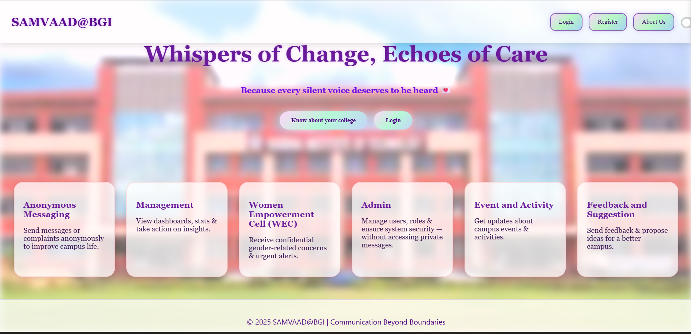

SAMVAAD@BGI is a dedicated anonymous messaging and feedback platform developed for college students. It is designed to bridge the gap between students and faculty while promoting a culture of transparency and responsiveness within the institution. As a team, we collaborated on designing the user interface, implementing core features, and ensuring a smooth user experience. The platform aims to streamline feedback collection, suggestion management, grievance redressal, and anonymous communication, all under a single unified system.
Github Repo Link